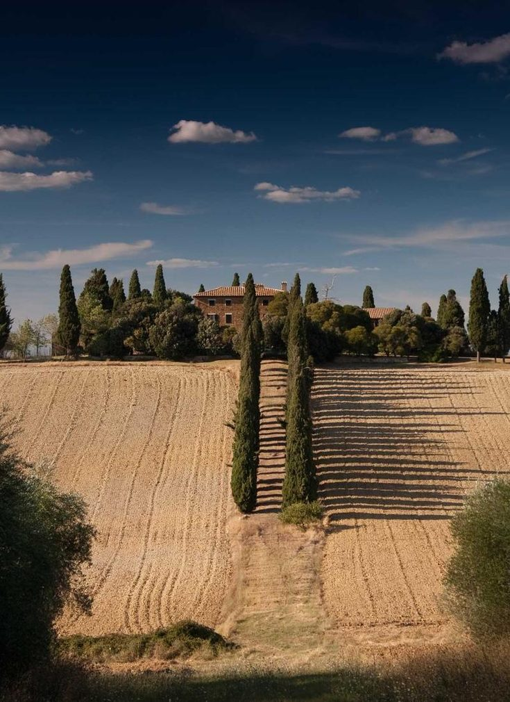

半圆扇面式
多张图片围绕半圆展开，呈扇形放射状布局

四帧一把扇
同题四帧 · 放射接缝
图注：外弧与内弧同出一条 path，扇骨是放射接缝；接缝两端各让 0.08°，窄到读成一条纸缝。
图片墙 · 第 6 式 半圆扇面式
06 / 11
弧形切幅式
通过弧形裁切形成横向视觉延伸，突出图片主体
四帧接成一条地平线
图注：上缘一条弧只升不落，格内不裁高度。
图片墙 · 第 7 式 弧形切幅式
07 / 11